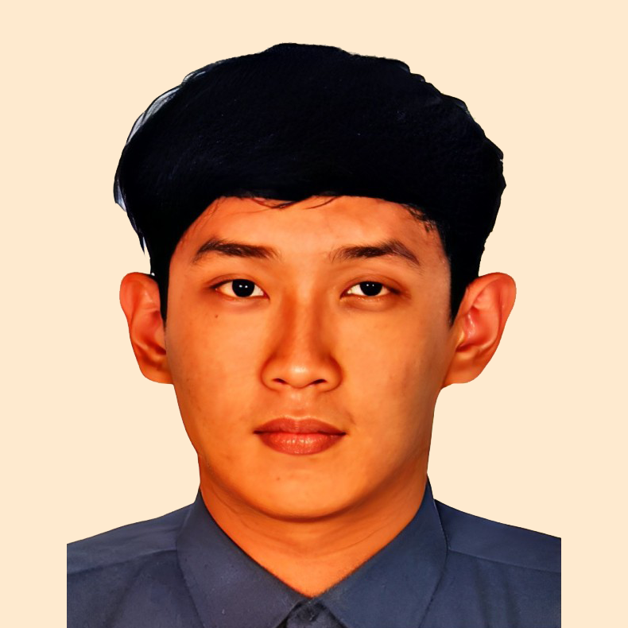

Scroll for more

Ivan Rusli
Software Engineer
| : | ivanrusli777@gmail.com | |
| Location | : | Jakarta, Indonesia |
| Age | : | |
| Github | : | @ivanruslimcdohl |
Education
Computer Science | 2013-2017 | GPA: 3.70/4.00
Satya Wacana Christian University, Indonesia
| I'm | a hard worker | |
| a team worker | ||
| a forever learner | ||
| an open minded and positive person |